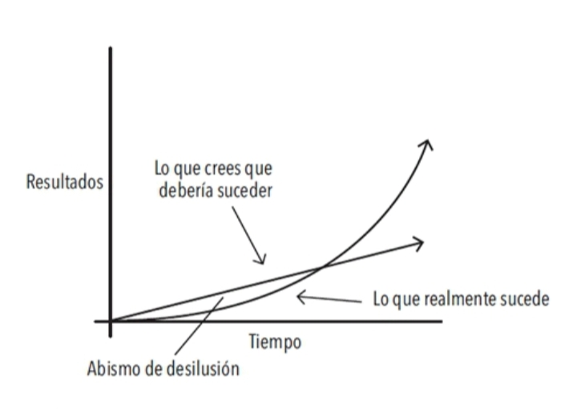

Por qué los pequeños hábitos generan una gran diferencia
|9.14| Es muy común sobrestimar la importancia de los grandes momentos definitorios y restarle valor a la realización de pequeñas mejoras cotidianas. Con frecuencia, nos convencemos a nosotros mismos de que un enorme éxito requiere una acción igual de relevante.
|9.15| Por otra parte, las pequeñas mejoras del 1% son hechos apenas perceptibles. Pero a la larga pueden ser mucho más significativas. La diferencia que las pequeñas mejoras pueden provocar es realmente sorprendente. La matemática de las pequeñas mejoras funciona de la siguiente manera: si logras ser un 1% mejor cada día durante un año, terminarás siendo 37 veces mejor al final del período1. Por el contrario, si deterioras tu conducta un 1% cada día, al final de un año habrás llegado casi a cero. Lo que empieza como una pequeña ganancia o una pérdida insignificante, se acumula con el tiempo y se convierte en algo grande.
|9.16| Los hábitos son el interés compuesto de la superación personal. De la misma manera en que el dinero se multiplica mediante el interés compuesto, los efectos de tus hábitos se multiplican en la medida en que los repites cada día. No parecen marcar mucha diferencia en un día determinado y, sin embargo, el impacto que producen conforme pasan los meses y los años puede resultar enorme. Solamente cuando miramos atrás y contemplamos los últimos dos, o cinco o quizá diez años, nos damos cuenta y nos quedamos sorprendidos del valor de los buenos hábitos y del coste negativo de los malos hábitos.
«Si las ganancias fueran lineales, podrías predecir una mejoría de 3.65x de mejoría. Pero como las ganancias son exponenciales, la mejora es en realidad 10x mejor» — Jason Shen (emprendedor y escritor).
1% mejor cada día

|9.21| FIGURA 1. Los efectos de los pequeños hábitos a lo largo del tiempo. Por ejemplo, si logras ser solamente un 1% mejor cada día, terminarás siendo 37 veces mejor al finalizar el año.
|9.23| Esto puede ser un concepto difícil de apreciar en la vida cotidiana. Frecuentemente descartamos los pequeños cambios porque no parecen importar mucho en un momento dado. Si ahorras un poco de dinero ahora, no te conviertes en millonario. Si vas al gimnasio tres días consecutivos, no te vas a poner en forma. Si estudias chino mandarín una hora por la noche, no habrás aprendido un nuevo idioma. Hacemos pequeños cambios, pero los resultados nunca se dan de manera inmediata; eso nos descorazona y nos lleva de vuelta a nuestras viejas rutinas.
|9.24| Desafortunadamente, el lento ritmo de la transformación también hace que sea muy fácil permitir el retorno de los malos hábitos. Si comes un alimento poco saludable hoy, la báscula no va a registrar un cambio muy drástico. Si hoy trabajas hasta tarde e ignoras a tu familia, te van a perdonar. Si aplazas el trabajo de un proyecto para el día siguiente, seguramente encontrarás el tiempo para terminarlo más adelante. Es fácil pasar por alto una pequeña mala decisión.
|9.25| Sin embargo, cuando repetimos día a día esos errores que representan apenas un 1%, cuando repetimos las malas decisiones y duplicamos los pequeños errores mediante excusas sin importancia, nuestras acciones acaban por producir resultados compuestos que son realmente tóxicos. La acumulación de muchos pasos en falso, un 1% de deterioro aquí y allá, finalmente se convierte en un grave problema.
|9.27| Del mismo modo, un pequeño cambio en tus hábitos cotidianos puede conducir tu vida a un destino completamente distinto. Tomar una decisión que es un 1% mejor o un 1% peor puede no parecer importante en un momento dado, pero en el transcurso de todos los momentos que conforman una vida, estas decisiones determinan la diferencia entre la persona que eres y la persona que podrías ser. El éxito es el producto de nuestros hábitos cotidianos, no de transformaciones drásticas que se realizan una vez en la vida.
|9.28| Dicho eso, no importa el éxito que tengas en este preciso momento. Lo que importa es determinar si tus hábitos te están conduciendo hacia el camino del éxito. Debes preocuparte más de la trayectoria que estás siguiendo en el presente que de los resultados que has alcanzado hasta ahora. Si eres millonario pero gastas más de lo que ganas cada mes, entonces estás siguiendo una mala trayectoria. Si tus hábitos de consumo no cambian, no vas a terminar bien. En cambio, si estás en quiebra pero consigues ahorrar un poco cada mes, entonces te encuentras en un camino que te conducirá a la libertad financiera, aun si lograrlo te toma más tiempo del que te gustaría.
|9.29| Tus resultados son los indicadores reactivos1 de tus hábitos. La cantidad de dinero que posees es un indicador reactivo de tus hábitos financieros. Tu peso actual es un indicador reactivo de tus hábitos alimenticios. Tu conocimiento es un indicador reactivo de tus hábitos de estudio. El aspecto de tu casa es un indicador reactivo de tus hábitos de orden y limpieza. Al final obtienes lo que repites.
|9.30| Si quieres predecir dónde terminarás tu vida, todo lo que tienes que hacer es seguir la curva de las pequeñas ganancias y pérdidas y proyectar cómo tus decisiones diarias se comportan a lo largo de diez o veinte años. ¿Gastas menos de lo que ganas cada mes? ¿Vas al gimnasio varias veces a la semana? ¿Lees libros y aprendes algo nuevo cada día? Las pequeñas batallas que ganamos cada día son las que definen nuestro futuro.
|9.31| El tiempo magnifica el margen entre éxito y fracaso y va a multiplicar aquello que repites con frecuencia. Los buenos hábitos terminan siendo tus aliados. Los malos hábitos acaban por convertirse en enemigos.
reactivo: respuesta a un impulso o estímulo.
Tus hábitos actúan de manera acumulativa a tu favor o en tu contra
| Hábitos acumulativos favorables | Hábitos acumulativos desfavorables |
|---|---|
| Productividad: Lograr terminar una tarea adicional es un pequeño logro en un día determinado, pero cuenta mucho en el transcurso de toda una carrera. El efecto acumulativo de lograr automatizar una tarea antigua para poder dominar una nueva habilidad es aún mayor. Entre más tareas seas capaz de realizar de manera automática, sin tener que pensar, más libertad tendrá tu cerebro de enfocarse en otras áreas. | Estrés: La frustración de un atasco, el peso de las responsabilidades de ser padres, la tensión de no llegar a fin de mes, la preocupación que produce tener la presión arterial un poco más alta de lo normal, etcétera. Por sí solas estas causas de estrés son tolerables, pero si persisten durante años, estas pequeñas preocupaciones se acumulan y se convierten en problemas de salud muy graves. |
| Conocimiento: Aprender una nueva idea no te convierte en un genio, pero mantener un compromiso de aprender algo cada día durante tu vida se convierte en una fuerza transformadora. Cada libro que lees no solo te enseña algo nuevo, también te estimula a repensar de manera distinta las viejas ideas.1 Como dice Warren Buffett: «Esta es la manera como el conocimiento funciona. Se va acumulando, como el interés compuesto del dinero invertido». | Pensamientos negativos: Cuanto más te consideras a ti mismo despreciable, carente de valor, tonto o feo, más te condicionas a interpretar la vida de la misma manera. Tu pensamiento queda atrapado en un círculo vicioso. Lo mismo ocurre con tu manera de pensar acerca de los demás. Una vez que caes en el hábito de considerar a las personas como malhumoradas, injustas o egoístas, empiezas a ver a ese tipo de personas en todas partes. |
| Relaciones sociales: Las personas reflejan la manera como te comportas con ellas. Cuanto más ayudas a los demás, más querrán ayudarte a ti. Ser un poco más amable en cada interacción con las personas, con el paso del tiempo termina por convertirse en una amplia y duradera red de conexiones. | Indignación: Los disturbios, protestas, movimientos de masas rara vez son producto de un acontecimiento aislado. Al contrario, una serie de agresiones menores y afectaciones repetidas se multiplican lentamente hasta que un acontecimiento se convierte en la gota que derrama el vaso y la indignación se extiende como un incendio. |
Esta idea —que aprender nuevas ideas incrementa el valor de las viejas ideas— es algo que escuché por primera vez de Patrick O’Shaughnessy, quien escribió: «Este es el motivo por el cual el conocimiento es compuesto. Los viejos conocimientos que valían 4/10 se pueden volver 10/10 cuando sean liberados por la lectura de otro libro en el futuro», http://investorfieldguide.com/reading-tweet-storm.
En qué consiste realmente el progreso
|9.42| Los grandes hitos, los momentos definitorios, con frecuencia son el resultado de muchos acontecimientos previos que acumulan el potencial requerido para desencadenar un gran cambio. Este mismo patrón se repite en todas partes. El cáncer es indetectable el 80% del tiempo desde que surge hasta que, en un momento dado, en cuestión de meses, acaba con el cuerpo1. El bambú apenas se alcanza a ver durante los primeros cinco años. Durante ese tiempo desarrolla un complejo sistema de raíces que, una vez maduro, le permite crecer más de 2 metros en menos de seis semanas.
|9.43| De manera similar, los hábitos con frecuencia no parecen provocar ningún cambio hasta que se alcanza un punto crítico, un umbral que desencadena un nivel superior de desempeño. En las etapas tempranas y medias de cualquier empresa, suele haber un abismo de desilusión. Uno siempre espera realizar progresos de manera lineal y ascendente, por ello es frustrante cuando a lo largo de períodos de días, semanas e incluso meses los cambios parecen no funcionar y uno tiene la sensación de permanecer en el mismo sitio. Es el sello de cualquier proceso acumulativo: los resultados más poderosos toman su tiempo y se retrasan.
|9.44| Esta es una de las razones por las que es tan difícil desarrollar hábitos que perduren. La gente hace pequeños cambios de conducta, no ve resultados tangibles y toma la decisión de detenerse. Podrías pensar: «He estado corriendo diariamente durante un mes y no logro ver ningún cambio en mi cuerpo». Una vez que este tipo de pensamiento se apodera de ti, es fácil abandonar los buenos hábitos. Para que los hábitos realmente generen un cambio, deben subsistir lo suficiente como para rebasar una meseta donde no se producen cambios perceptibles. Yo la llamo meseta de potencial latente.
|9.45| Si te está costando demasiado esfuerzo desarrollar un nuevo hábito bueno o romper con uno malo, no se trata de que hayas perdido tu capacidad de realizar mejoras. Con frecuencia esto se debe a que no has logrado cruzar la meseta de potencial latente. El trabajo no se desperdicia, solo se acumula.
|9.46| Cuando al fin logras ir más allá de la meseta del potencial latente, la gente considera que el hecho es un éxito conseguido de la noche a la mañana. La mayoría de la gente solo percibe los eventos más llamativos y no se detiene a ver todo el trabajo y el esfuerzo que tienen detrás. Pero tú sabes que todo el trabajo que has invertido durante mucho tiempo, cuando parecía que no estabas haciendo ningún progreso, es lo que realmente hizo posible el cambio.
«How to live a longer, higher quality life, with Peter Attia, M.D.», Investor’s Field Guide, 7 de marzo de 2017, http://investorfieldguide.com/attia [Cómo vivir una vida más larga y de alta calidad, con el Dr. Peter Attia].
La meseta de potencial latente

|9.53| FIGURA 2. Solemos suponer que el progreso se da de manera lineal y ascendente. Por lo menos esperamos que suceda rápido. En la realidad, los resultados de nuestros esfuerzos suelen tomar tiempo y retrasarse. No es sino meses o incluso años después cuando nos damos cuenta del verdadero valor de todo el trabajo que hemos realizado. Esto puede tener como resultado un «abismo de desilusión», un punto en el que la gente se siente descorazonada tras haber invertido semanas o incluso meses de trabajo duro sin experimentar ningún resultado aparente. Sin embargo, su trabajo no se desperdició. Tan solo se acumuló. No es hasta mucho tiempo después cuando el verdadero valor del esfuerzo previo es revelado.
|9.55| Todas las cosas importantes provienen de comienzos modestos. La semilla de cada hábito es una pequeña decisión. Pero conforme esa decisión se repite, un hábito nuevo surge y se va fortaleciendo.
|9.56| Pero ¿qué es lo que determina que mantengamos un hábito el tiempo suficiente para sobrevivir la meseta del potencial latente y conseguir llegar al otro lado? ¿Qué es lo que provoca que algunas personas regresen a sus malos hábitos mientras otras consiguen disfrutar de los efectos acumulativos de los hábitos favorables?
Olvida las metas y mejor céntrate en los sistemas
|9.60| La sabiduría prevaleciente afirma que la mejor manera de alcanzar lo que queremos en la vida (ponerse en forma, establecer un negocio exitoso, relajarse y dejar de preocuparse, pasar más tiempo con la familia y amistades) consiste en establecer metas específicas y viables.
|9.61| Durante muchos años esa fue también la manera en que abordé mis hábitos. Cada hábito constituía una meta a alcanzar. Establecí metas para alcanzar las calificaciones que quería obtener en la escuela, para la cantidad de peso que quería levantar en el gimnasio, para las ganancias que deseaba obtener en mi negocio. Tuve éxito con algunas de ellas, pero fracasé en muchas otras. Finalmente empecé a darme cuenta de que mis resultados poco tenían que ver con mis metas y mucho con los sistemas que había seguido para alcanzarlas.
|9.62| ¿Cuál es la diferencia entre metas y sistemas? La respuesta la aprendí de Scott Adams, el caricaturista creador de la tira cómica Dilbert. Según Adams, las metas son los resultados que quieres obtener. Los sistemas son los procesos que sigues para alcanzar esos resultados.
|9.71| ¿A qué me refiero cuando afirmo esto? ¿Son las metas totalmente inútiles? Por supuesto que no. Las metas son buenas para establecer una dirección, pero los sistemas son mejores para realizar verdaderos progresos. Un montón de problemas surgen cuando pasas demasiado tiempo pensando en tus metas en lugar de dedicar el tiempo a diseñar tus sistemas.
Problema 1: Los ganadores y los perdedores comparten las mismas metas
|9.74| Tenemos serios prejuicios cuando se trata de juzgar las metas de los demás. Tendemos a confundir éxito con supervivencia. Nos concentramos en las personas que logran ganar —los supervivientes— y de manera equivocada asumimos que sus ambiciosas metas los condujeron al triunfo. Al hacerlo, no nos damos cuenta de que muchas otras personas tenían la misma meta pero no consiguieron el éxito.
|9.75| Todos los atletas olímpicos desean ganar una medalla de oro. Todos los candidatos quieren obtener el empleo. Si la gente que tiene éxito y la que no lo consigue comparten la misma meta, esta última no puede ser lo que distingue a los ganadores de los perdedores.
Problema 2: Alcanzar una meta consiste únicamente en un cambio momentáneo
|9.78| Imagina que tienes una habitación muy sucia y desordenada y que estableces la meta de limpiarla y ordenarla. Si reúnes la energía para hacer el trabajo necesario, entonces habrás ordenado tu habitación, al menos por un momento. Pero si mantienes los mismos hábitos descuidados y desordenados que te llevaron a tener una habitación en mal estado, pronto volverás a tener una pila de cosas fuera de lugar y estarás a la espera de un nuevo arranque de motivación para limpiarla de nuevo. Seguirás persiguiendo un resultado porque nunca te tomaste el tiempo de cambiar el sistema que está detrás de él. Curaste un síntoma sin hacer nada para resolver su causa.
|9.79| Cuando logras alcanzar una meta, tu vida cambia únicamente durante un momento. Esa es la paradoja de las mejoras. Pensamos que debemos cambiar los resultados pero los resultados no son el problema. Lo que realmente necesitamos cambiar son los sistemas que nos llevan a tener esos resultados. Cuando resuelves problemas a partir de los resultados, solamente los resuelves de manera momentánea. Para que realmente logres una mejora perdurable, debes resolver los problemas a partir de los sistemas. Arregla los sistemas y los resultados se arreglarán por sí mismos.
Problema 3: Las metas restringen la felicidad
|9.82| La suposición implícita que está detrás de cualquier meta es la siguiente: «Una vez que alcance mi meta, seré feliz». El problema con una mentalidad que privilegia las metas es que siempre se pospone la felicidad hasta que se logra alcanzar el siguiente hito.
|9.83| Es más, la mentalidad que se rige por la consecución de metas acaba por crear un conflicto de exclusión: o alcanzas tu meta y tienes éxito o fallas y eres un fracaso. Mentalmente te encajonas dentro una estrecha concepción de la felicidad. Esto es una equivocación. Es bastante improbable que el camino real por el que se va a desarrollar tu vida coincida plenamente con el camino que imaginaste cuando decidiste lo que querías hacer. No tiene sentido que restrinjas tu felicidad y satisfacción a un solo escenario, cuando existen muchos caminos que conducen al éxito.
|9.84| Una mentalidad que privilegia los sistemas te proporciona un antídoto. Cuando te enamoras del proceso más que del producto final, no tienes que esperar hasta el desenlace para permitirte ser feliz. Puedes sentirte satisfecho y feliz siempre que tu sistema esté funcionando. Y los sistemas pueden funcionar bien de muchas maneras distintas, no solamente de la manera en que lo concebiste al principio.
Problema 4: Las metas no coinciden con el progreso a largo plazo
|9.87| Por último, una mente que privilegia las metas puede crear un efecto de «yoyó». Muchos corredores entrenan durante meses, pero tan pronto como cruzan la línea de meta, dejan de entrenar. La carrera ya no está ahí para motivarlos. Cuando todo tu trabajo se centra en una meta en particular, ¿qué queda para motivarte una vez que la alcanzas? Esta es la razón por la cual muchas personas regresan a sus viejos hábitos malos una vez que alcanzan una meta.
|9.88| El propósito de definir metas consiste en convertirse en un ganador de una sola ocasión. El propósito de construir sistemas consiste en seguir participando en el juego. La mentalidad que verdaderamente se centra en el largo plazo no se centra en el cumplimiento de metas. No se trata de alcanzar metas aisladas. Se trata de un ciclo de refinamiento interminable y de mejora continua. Por encima de todo, tu compromiso con el proceso es lo que va a determinar tu progreso.
Un sistema de hábitos atómicos
|9.92| Si tienes problemas para cambiar tus hábitos, el problema no eres tú. El problema es tu sistema. Los malos hábitos se repiten constantemente no porque tú no los quieras cambiar, sino porque tienes un sistema que no funciona.
|9.93| No te elevas al nivel de tus metas. Desciendes al nivel de tus sistemas1.
|9.94| Uno de los temas centrales de este libro consiste en aprender a centrarse en los sistemas en general, en lugar de concentrarse en una meta única. De hecho, este es uno de los conceptos principales que sirven para definir la palabra atómico. Los hábitos atómicos son pequeños hábitos que forman parte de un sistema mayor. Así como los átomos son los ladrillos que conforman las moléculas, los hábitos son los ladrillos de los resultados extraordinarios. Los hábitos son como los átomos de nuestras vidas. Cada uno es una unidad fundamental que contribuye a la mejora en general. Al principio estas pequeñas rutinas parecen ser insignificantes, pero pronto se acumulan y se convierten en un combustible que genera ganancias tan importantes que sobrepasan con creces el coste de las inversiones iniciales. Son al mismo tiempo pequeños y poderosos. Este es el significado de la expresión hábitos atómicos, una práctica regular o rutina que no es solamente pequeña y fácil de realizar, también es la fuente de un poder increíble. Un componente de un sistema de crecimiento compuesto.
Esta línea está inspirada en la siguiente cita de Arquíloco: «No nos elevamos al nivel de nuestras expectativas, caemos al nivel de nuestro entrenamiento».
Resumen del capítulo
|9.98| • Los hábitos son el interés compuesto de la superación personal. Trabajar para lograr ser un 1 % mejor cada día cuenta mucho a la larga.
|9.99| • Los hábitos son una espada de doble filo. Pueden trabajar a tu favor o en tu contra.
|9.100| • Los pequeños cambios con frecuencia parecen no tener ningún efecto hasta que logras cruzar un umbral crítico. Los resultados más poderosos de cualquier proceso acumulativo suelen retrasarse. Debes aprender a ser paciente.
|9.101| • Un hábito atómico es un pequeño hábito que forma parte de un sistema más complejo. De la misma manera en que los átomos son los ladrillos de las moléculas, los hábitos atómicos son los ladrillos de los resultados excepcionales.
|9.102| • Si quieres mejores resultados, olvídate de fijar metas. En lugar de eso, concéntrate en tu sistema.
|9.103| • No te elevas al nivel de tus metas. Desciendes al nivel de tus sistemas.
Glosario
atómico:
- Una cantidad extremadamente pequeña de una cosa, la unidad más pequeña e irreductible que forma parte de un sistema mayor.
- La fuente de una inmensa energía o poder.
hábito:
- Una rutina o práctica que se realiza de manera regular; una respuesta automática a una situación específica.